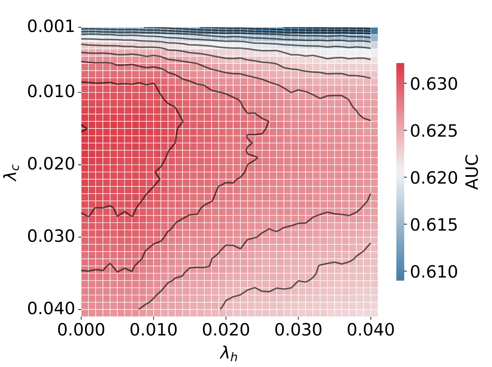
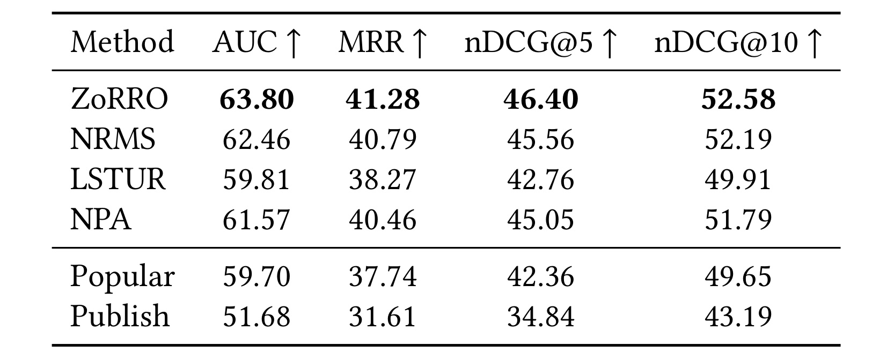
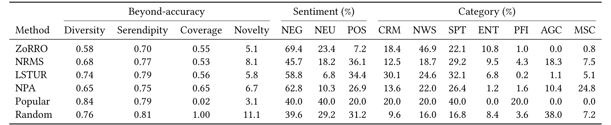
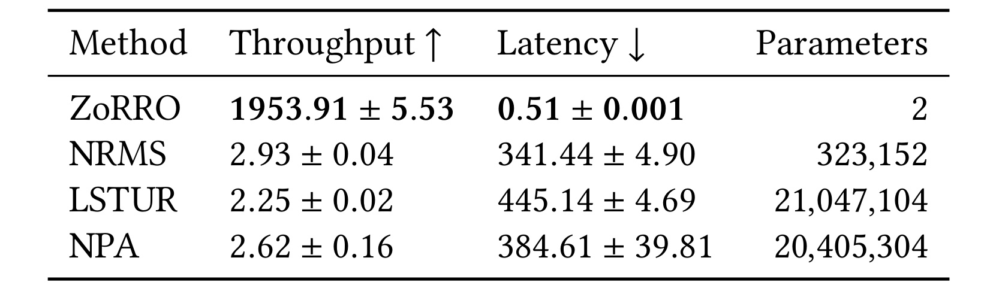
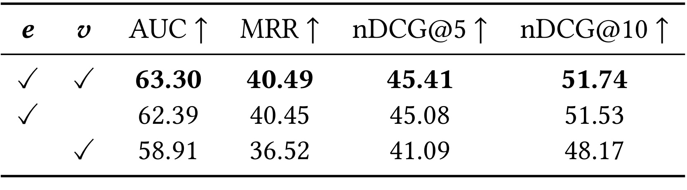
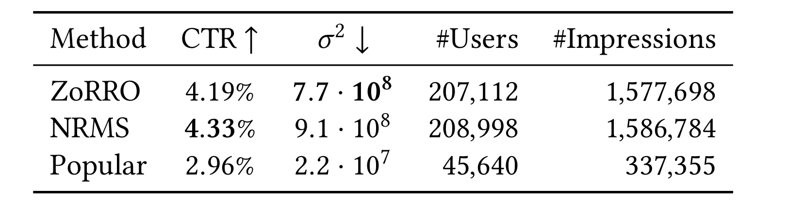
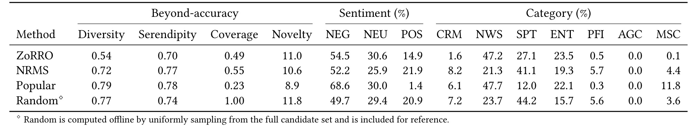

ZoRRO：零训练权重的可扩展新闻推荐
ZoRRO: A Zero-Weight Personalized Recommender System for Scalable News Recommendation 由 Johannes Kruse、Ryotaro Shimizu、Kasper Lindskow、Jon Tofteskov、Michael Riis Andersen、Julian McAuley 和 Jes Frellsen 完成。一作主机构为丹麦技术大学，合作方包括 JP/Politikens Media Group、ZOZO Research 与加州大学圣迭戈分校。论文于 2026 年 7 月 12 日公开，入口为 arXiv:2607.10910，作者公开的 ZoRRO 代码仓库 已核验可访问。它把候选文章的新鲜度与候选—历史文章的表征相似度相乘求和，不训练推荐模型权重，却在 EB-NeRD 离线排序、生产吞吐和六天在线 A/B 三个口径上给出了相互制约的证据。
新闻平台持续涌入新文章，内容寿命很短，推荐系统必须迅速接纳新内容并跟随用户兴趣变化；复杂深度模型往往需要大量计算、专门知识和持续维护，其报告收益也不总能抵偿真实部署成本。
1. 背景和问题
1.1 新闻推荐的时间尺度改变了“模型能力”的含义
在电影或电商长尾商品场景里，一个物品可以积累较长时间的交互，模型也有机会周期性重训；新闻却同时面对物品和用户两侧的快速变化。新文章刚发布时几乎没有点击，等待协同信号成熟会错过其有效期；一篇热门文章几小时后仍可能语义相关，却已经不再适合继续占据曝光；用户刚发生的一次点击也可能代表临时事件兴趣，而不是长期偏好。于是，新闻系统的实际能力不只取决于离线 AUC，还取决于新内容进入候选池后多久能被个性化、兴趣变化多久能反映到排序、每次候选更新需要多少计算，以及系统能否持续稳定维护。
主流神经新闻推荐会学习新闻编码器、用户序列模型或注意力结构。它们能表达复杂交互，但也引入训练数据刷新、负采样、参数部署、GPU 推理和模型漂移监控等成本。作者并没有据此断言深度模型没有价值，而是提出一个更可检验的问题：在已有高质量文章表征、候选池高频刷新、线上延迟敏感的前提下，是否可以把“推荐器”缩成一个没有可学习权重的确定性评分函数，同时保留足够的个性化与排序质量？ ZoRRO 的意义在于把这个问题放到统一离线基准、系统测量和真实线上流量中回答，而不是只用一个小数据集上的点估计证明“简单模型更好”。
1.2 “零权重”不等于“零语义成本”
ZoRRO 的 zero-weight 指推荐打分器本身没有通过梯度学习得到的参数。它仍然依赖文章的文档 embedding，而实验中的 embedding 可以来自 word2vec、BERT、RoBERTa 或在新闻域上训练的对比学习模型。因此系统不是完全没有模型成本：文章编码器的训练或下载、新闻入库时的 embedding 计算、向量存储与更新都在推荐打分之前发生。论文的效率结论更准确地说是：当文章表征已经预计算后，在线个性化排序只需时效衰减、余弦相似度、乘法和求和，不需要运行用户神经网络或迭代训练推荐器。
这个边界很重要。若把 600 倍吞吐直接理解为端到端新闻平台快 600 倍，就会忽略文本编码、候选生成、数据库和网络开销；若因为用了预训练 embedding 就否认“零权重”，又会混淆表征层与推荐器层的责任。ZoRRO 把两者拆开：外部表征负责把文章内容映射到可比较空间，推荐器负责用最近点击历史和文章年龄组织这些表征。这个分层使新文章不必等待推荐模型重训，只要得到 embedding 和类别即可进入评分；但 embedding 质量也会成为系统性能的外部依赖。
1.3 准确率只是内容流的一条观测轴
新闻推荐不只是预测点击，还在决定用户看到什么主题、情感和时间跨度。两个模型即便 CTR 接近，也可能一个集中推送最新的综合新闻，另一个更多覆盖体育、财经或更旧内容；这种差异会影响编辑目标、内容多样性和长期用户体验。论文因此同时报告 diversity、serendipity、coverage、novelty，以及情感和类别分布，并分别在离线与线上环境测量。这里的关键不是宣称某个分布必然更“好”，而是让部署者看到：排名指标或 CTR 相似时，系统仍可能形成显著不同的新闻流。
这也为离线—线上错位提供了解释框架。EB-NeRD 隐藏测试是静态、偏首页的新闻周期切片；线上系统面对持续更新、页面更深位置和规则生成的候选集合。一个强调新鲜度的方法可能在静态切片上更符合点击标签，却在动态环境中因过度集中而损失部分探索；神经模型的离线 AUC略低，却可能在线上覆盖更多兴趣并得到略高 CTR。ZoRRO 的实验价值不在于消除这种错位，而在于把错位连同内容分布一起暴露出来。
2. 方法
2.1 把个性化评分拆成内在相关性与关系相关性
设候选文章为 $c$，用户已点击历史为 $H=[h_1,\ldots,h_M]$。ZoRRO 为候选计算一个实数分数 $r(c)$：候选自身的内在相关性 $\phi_c(c)$ 乘以它与每条历史文章的关系相关性 $\tau(c,h)$，历史项还由 $\phi_h(h)$ 加权。论文的核心评分式为：
$$ r(c)=\phi_c(c)\sum_{h\in H}\tau(c,h)\phi_h(h). $$符号解释：$\phi_c(c)$ 决定候选本身是否仍处于合适的时间窗口，$\phi_h(h)$ 决定旧点击对当前兴趣还有多少作用，$\tau(c,h)$ 则回答候选与那次点击在语义和编辑类别上有多接近。求和意味着用户表示不是一个额外训练出的固定向量，而是历史文章表征的动态加权组合；任意一条历史都可以对候选贡献正或较小的相似分。个性化来自候选与该用户历史的逐项关系，时效性来自候选侧与历史侧两个独立衰减器，二者在打分时才合流。
对候选集合 $C=[c_1,\ldots,c_N]$，同一计算可写成矩阵形式：
$$ \mathbf r(C)=\boldsymbol\phi_c(C)\odot \left(\boldsymbol\tau(C,H)\boldsymbol\phi_h(H)\right). $$符号解释：$\boldsymbol\tau(C,H)\in\mathbb R^{N\times M}$ 是全部候选与全部历史的关系矩阵，$\boldsymbol\phi_h(H)$ 是 $M$ 维历史权重，矩阵—向量乘法一次产生每个候选的历史匹配和，再与 $N$ 维候选时效权重做 Hadamard 乘积。$N$ 和 $M$ 分别是候选数与历史长度。服务端可以批量计算，而不必为每个用户运行序列神经网络。复杂度仍随候选数和历史长度近似线性增长于 $NM$；论文固定历史长度 20 测吞吐，所以“可扩展”不等于任意长历史都免费。
2.2 用双侧指数衰减表达新闻时效性
内在相关性使用最简单的指数衰减。令 $t(x)$ 表示文章 $x$ 自发布以来的小时数，候选与历史分别使用衰减率 $\lambda_c$ 和 $\lambda_h$：
$$ \phi_c(x)=e^{-\lambda_c t(x)}, \qquad \phi_h(x)=e^{-\lambda_h t(x)}. $$符号解释：$t(x)$ 是文章发布后经过的小时数，$\lambda_c$ 与 $\lambda_h$ 分别控制候选侧和历史侧的衰减速度。当 $\lambda_c>0$ 时，越新的候选权重越大；当 $\lambda_h>0$ 时，越久远的点击对当前候选影响越小。两个参数不是梯度训练出的权重，而是根据验证表现选择的超参数。分开设置比只给最终分数加一个统一 recency feature 更有解释力：候选需要快速淘汰，并不必然意味着用户历史也要同速遗忘。实验最优附近恰好是 $\lambda_c=0.015$、$\lambda_h=0$，即候选侧重视新鲜度，历史侧在这套数据上不做时间衰减；这说明长期兴趣表征和内容保鲜期可以是不同时间尺度。

原论文没有单独的方法流程图；Figure 2 是由敏感性实验得到的真实参数面，而不是算法示意图。把它放在方法章，是因为它直接把 Eq.3 中不可从公式外观判断的两个自由度可视化：横轴 $\lambda_h$ 控制历史记忆，纵轴 $\lambda_c$ 控制候选保鲜，颜色与等高线是验证 AUC。高值区域集中在候选侧约 0.01—0.02、历史侧接近 0，而不是沿对角线分布，这为“候选寿命与兴趣记忆必须分开调节”提供了原文证据。它还显示最优区不是尖锐孤点，邻近配置的 AUC 接近，说明方法不依赖极端精确的单点参数；但扫描范围只到 0.04，且结果来自同一出版商，不能把这张图误读成所有新闻站点都应使用 $\lambda_c=0.015$、$\lambda_h=0$。换言之，这是一张连接方法公式与可调行为的敏感性图，不是对线上 CTR 或内容分布的直接证明。
指数函数的优势是单调、无状态、容易增量更新，新文章也不需要交互即可得到非零权重。它的限制同样明显：所有类别共享一个保鲜速度，突发新闻、体育赛果、深度评论和生活指南的寿命差异被压进同一个 $\lambda_c$；用户在某一事件上的短期兴趣也不一定按指数规律消失。零权重换来的是低维护和可解释性，不是对时间机制的完整建模。
2.3 语义相似度与类别相似度的无参组合
每篇文章有文档 embedding $\mathbf e$ 和 one-hot 类别向量 $\mathbf v$。关系相关性是两种余弦相似度的等权和：
$$ \tau(c,h)=\cos(\mathbf e_c,\mathbf e_h)+\cos(\mathbf v_c,\mathbf v_h). $$符号解释：$\mathbf e_c$ 与 $\mathbf e_h$ 是候选和历史文章的文档 embedding，$\mathbf v_c$ 与 $\mathbf v_h$ 是对应 one-hot 类别向量，$\cos(\cdot,\cdot)$ 为余弦相似度。第一项捕捉跨词面的语义邻近，例如两篇文章都讨论同一选举但标题用词不同；第二项对同类别文章给出明确一致性信号。one-hot 余弦在类别相同时为 1、否则为 0，因此类别项像一个离散加成。两项没有学习出的混合系数，推荐器仍保持 zero-weight。论文也强调这个接口可替换：可以换文章表征或相似函数，而不改变“候选时效 × 历史加权关系”的总体形式。不过，一旦引入学习的类别 embedding 或混合权重，“零训练权重”的边界就需要重新定义。
在线链路可以概括为四步：新闻入库时生成 embedding 并保存类别和发布时间；请求到来时取规则候选与用户最近历史；批量计算相似矩阵和双侧时间权重；按 $\mathbf r(C)$ 排序返回 top-$k$。训练与推理没有参数 checkpoint 的切换，文章更新也不触发推荐模型重训。需要调优的是 $\lambda_c$、$\lambda_h$、历史长度和 embedding 选择；它们虽然数量少，仍应在时间切分验证集上确定，避免把未来新闻周期泄漏进当前配置。
3. 实验结果
3.1 数据、基线与评测口径
离线实验使用 EB-NeRD large：超过 3700 万条 impression、100 万用户和 12.5 万篇文章。隐藏测试遵循官方框架，训练与验证合并后保留最后 24 小时用于神经基线的 early stopping 与 checkpoint 选择。排序指标包括 AUC、MRR、nDCG@5 和 nDCG@10；超越准确率统计 top-5 的 diversity、serendipity、coverage、novelty，并描述情感和类别占比。神经基线是 NRMS、LSTUR、NPA，分别代表多头自注意力、长短期用户表示和个性化注意力；启发式基线 Popular 按近期点击、Publish 按发布时间排序。
所有方法都用 Optuna/TPE 调参。神经模型训练 5 个 epoch、batch size 32、负采样比 4，使用 Adam、$10^{-4}$ 学习率和 L2、20% dropout。效率测量固定 history size 为 20、embedding 维度 768，报告 1000 次调用、每次 100 个请求的均值和标准差。线上 A/B 于 2024 年 11 月 12—18 日在 Ekstra Bladet 运行，用户稳定分桶为 ZoRRO 45%、NRMS 45%、Popular 10%，共享由规则生成并持续更新的 250 篇热门近期文章候选集。
3.2 离线排序：零权重方案在隐藏测试领先
ZoRRO 在隐藏测试四项排序指标均为表中最高：AUC 63.80、MRR 41.28、nDCG@5 46.40、nDCG@10 52.58；最强神经基线 NRMS 分别为 62.46、40.79、45.56、52.19。AUC 高 1.34 个点，nDCG@10 只高 0.39 个点，说明优势稳定跨指标但幅度并不一致。仅按发布时间的 Publish 只有 51.68 AUC，Popular 59.70，因此 ZoRRO 的表现不能由“新闻越新越容易点”单独解释；历史语义和类别关系是必要部分。

Table 1 应按“比较条件一致、优势幅度有限、启发式不足”三层解读。第一，ZoRRO、NRMS、LSTUR、NPA 与两种启发式在同一隐藏测试和四项指标下对齐，零权重方法不是借不同数据切分取得优势。第二，ZoRRO 四列均第一，但相对 NRMS 的差距从 MRR 的 0.49 到 AUC 的 1.34 不等，不能概括成对所有排序目标都有巨大提升。第三，Publish 显著落后说明候选时效不是全部答案，Popular 也未达到 NRMS；ZoRRO 真正增加的是“近期候选与该用户历史的内容关系”。这张表证明它是强离线基线，却没有证明其线上点击会高于神经模型，后面的 A/B 结果恰好构成反例。
历史长度从 1 增到 100 时，各模型 AUC 先提高后趋于平台，体现信息增益与覆盖之间的折中。更长历史能包含更多兴趣证据，但会排除历史不足的新用户并增加 $NM$ 相似计算。论文没有从图中给出统一最优长度，而效率表固定 20；因此复现时应把 history size 视为业务分布与服务预算共同决定的参数，不能直接照搬 20 或 100。
3.3 离线超越准确率：相近排序分数塑造不同内容流
离线 top-5 中，ZoRRO 的 diversity、serendipity、coverage、novelty 为 0.58、0.70、0.55、5.1；NRMS 为 0.68、0.77、0.53、8.1。ZoRRO 覆盖略高，却在多样性、惊喜度和新颖性上更低，符合时效加权把曝光集中到近期且相似的内容。类别上 ZoRRO 的新闻类占 46.9%，NRMS 只有 18.7%；NRMS 对体育和自动生成内容分别为 29.2% 与 18.3%，ZoRRO 为 22.1% 与 0.0%。情感分布也明显不同：ZoRRO 负向 69.4%、正向 7.2%，NRMS 为 45.7% 与 36.1%。

Table 2 不能被读成“ZoRRO 更负面”或“NRMS 更健康”的价值判断，因为情感分类、候选集合与新闻周期都可能影响占比；它真正证明的是，相近 AUC 之下内容流差异足够大，不能只盯准确率。表中 Random 的 coverage 为 1.00、novelty 11.1，却不代表随机推荐更优；Popular 的 diversity 0.84 很高、coverage 仅 0.02，也说明单项高值可能来自重复推少量跨类别热门内容。评价需要同时看相关性、覆盖、分布和业务目标。ZoRRO 的新闻类集中度与候选时效机制方向一致，但离线候选仅是测试期 250 篇最新文章，这些绝对比例不能直接外推到持续更新的线上候选池。
文章表征实验还显示架构偏好并不相同：ZoRRO 使用新闻域对比学习 embedding 时 AUC 63.3，word2vec 62.1，BERT 60.8，RoBERTa 60.2；LSTUR 和 NPA 则在 word2vec 上分别达到 63.0 和 62.9。通用 Transformer embedding 在这里没有自然胜出，提示“更大的编码器”不等于“更适合推荐相似度”。ZoRRO 依赖表征质量，但适配表征可以离线更新而无需重训推荐器。
3.4 效率：600 倍来自轻量在线打分，而非完整平台倍数
固定 history size 20、768 维 embedding 时，ZoRRO 吞吐为 $1953.91\pm5.53$ requests/s，平均延迟 $0.51\pm0.001$ ms/request，参数表中只有两个衰减率；NRMS 为 $2.93\pm0.04$ requests/s、$341.44\pm4.90$ ms 和 323,152 个参数，LSTUR 与 NPA 更慢且超过 2000 万参数。按吞吐计算，ZoRRO 相对 NRMS 约 667 倍，相对 LSTUR 约 868 倍，相对 NPA 约 746 倍，因此摘要所说“超过 600 倍”有表内数据支撑。

Table 3 的数字必须和测量边界一起保存。它比较的是预计算文章表征后的推荐推理：ZoRRO 做矩阵相似与加权，神经基线运行用户建模网络。表格没有包含文章 embedding 生成、PostgreSQL 读取、候选规则、网络传输或容器调度，所以不能直接推断整个新闻页面延迟会按 600 倍缩短。“Parameters=2”指推荐评分中的 $\lambda_c$ 与 $\lambda_h$，不包括外部 embedding 模型。即便如此，341—445 ms 降到 0.51 ms 对高频候选刷新仍是实质差异：它释放了更大的并发余量，也减少模型 checkpoint、GPU 服务和重训管线的运维面。
论文报告均值和标准差，但没有给不同硬件上逐项完全对齐的成本核算，也未报告 embedding 预计算摊销、能耗或端到端 P99。更严谨的部署评估应同时测“新闻入库到可推荐”的新鲜度延迟和“请求到 top-$k$”的在线延迟；ZoRRO 最可能在第二项占优，并因无需推荐器重训间接改善第一项。
3.5 机制消融：语义主导、类别互补、候选侧衰减更重要
关系特征消融中，语义 embedding 与类别 one-hot 同时使用时 AUC/MRR/nDCG@5/nDCG@10 为 63.30/40.49/45.41/51.74；仅语义为 62.39/40.45/45.08/51.53；仅类别降至 58.91/36.52/41.09/48.17。语义是主要信号，类别带来 0.91 AUC 的互补增益，但类别单独不足以替代文章内容。两项等权相加没有增加学习参数，却也没有回答不同用户或不同新闻周期是否应使用不同权重。

Table 5 支持的是一个窄结论：在作者的表征、数据和调参条件下，类别信号对语义相似度有增量价值。它没有比较学习型融合、类别层级或多标签主题，也没有给跨周期方差。仅语义时 MRR 几乎不变而 AUC 下降更明显，暗示类别加成主要改善更广泛的正负样本排序，而不一定显著改变首个相关项位置。仅类别仍高于 Publish 的 AUC 51.68，却低于 Popular 59.70，说明粗粒度编辑标签有个性化信息但表达力有限。复现时应先确认类别体系是否稳定、one-hot 是否把相近类别错误地视为完全正交。
双侧时效敏感性给出另一个机制检验：最佳区域在 $\lambda_c=0.015$、$\lambda_h=0$ 附近。候选侧适度衰减优于不考虑新鲜度，也优于过快淘汰；历史侧不衰减更好，说明当前点击历史已被长度窗口限制，再额外按时间衰减可能重复压低旧兴趣。热力图中 $\lambda_c$ 增到 0.04 时 AUC 明显下降，表明“越新越好”同样错误。
不同平台的突发新闻密度、历史窗口和候选刷新频率会移动最优区，$\lambda$ 应按时间向前验证而不是跨站复用。Figure 2 中最高 AUC 约 0.63，与 Table 5 的消融口径接近，但并非隐藏测试 63.80 的完全同一设置，不能混合比较小数。该图也只展示静态验证表现，没有揭示参数变化对类别覆盖或线上 CTR 的连带影响，部署调参仍需多目标复核。
3.6 线上 A/B：CTR 接近不代表内容分布接近
六天 A/B 中，NRMS 观察 CTR 4.33%，ZoRRO 4.19%，Popular 2.96%。ZoRRO 覆盖 207,112 用户、1,577,698 impressions，NRMS 为 208,998 用户、1,586,784 impressions；45%/45% 分流使两组规模接近。离线四项均第一的 ZoRRO 在线没有超过 NRMS，这正是论文强调的 offline-online mismatch。差距为 0.14 个百分点，约相对 3.2%，但表中没有置信区间、显著性检验或用户级重采样，因此只能说观察值略低，不能断言 NRMS 已统计显著胜出。

Table 7 的 Popular 组只有 10% 流量，用户和曝光明显少于另两组；其 CTR 2.96% 足以说明个性化方案在线上都更有竞争力，但不同样本量使方差不能只看点估计。表内 $\sigma^2$ 的排版量级还需要结合论文实现解释，不宜自行换算成置信区间。更关键的是，ZoRRO 并非离线领先却线上失效：它的 CTR 接近 NRMS，服务打分快两个数量级以上；部署选择因此是点击、延迟、维护和内容分布之间的权衡，而不是只比较 4.19 与 4.33。若业务流量巨大，0.14 个百分点仍可能重要，必须补齐显著性、分群与长期留存证据。
线上分布把这种权衡具体化。ZoRRO 与 NRMS 的 diversity 为 0.54 vs 0.72、coverage 0.49 vs 0.55；新闻类占 47.2% vs 21.3%，体育占 27.1% vs 41.1%，正向情感占 14.9% vs 21.9%。ZoRRO top-5 中最新与最旧文章的平均跨度仅 9 小时 50 分，NRMS 为 20 小时 40 分，Popular 为 1 天 4 小时。ZoRRO 更集中、更“新”，与候选指数衰减一致，也可能解释静态首页切片上的离线优势为何没有完整转为持续更新环境的 CTR。

Table 6 显示 CTR 接近的两个模型实际塑造了不同新闻流：ZoRRO 的新闻类曝光比 NRMS 高 25.9 个百分点，NRMS 的体育曝光高 14.0 个百分点；ZoRRO 覆盖和多样性更低，Popular 则覆盖仅 0.23。Random 只作为离线从完整候选均匀采样的参考，不能与真实线上分桶直接比较。情感和类别比例也不是质量分数：新闻周期可能恰好负向事件较多，编辑目标也可能要求及时集中。表格的部署含义是必须在上线前定义分布护栏，例如类别最低覆盖、单主题集中度和时间跨度，而不是发现 CTR 相近就认为两个模型可互换。
作者指出离线数据偏首页静态快照，线上候选持续更新且推荐位更深；这两种 exposure mechanism 不同。一个可行的进一步诊断是按文章年龄、页面位置、用户历史长度和主题拆解 CTR，判断 ZoRRO 的差距来自过强候选衰减、某些类别不足，还是离线标签与线上位置偏差。当前六天结果证明可部署性和效率，却不足以判断长期留存、订阅、编辑价值或事件周期鲁棒性。
4. 总结
4.1 得到的结论与证据边界
ZoRRO 把新闻个性化压缩成一个清晰计算图：候选侧新鲜度乘以候选—历史的语义和类别相似度加权和，历史侧可独立衰减。它没有推荐模型训练权重，新文章完成表征后即可参与排序。EB-NeRD 隐藏测试上四项排序指标领先，预计算 embedding 后的打分吞吐比三种神经基线高 600 倍以上，六天线上 CTR 接近 NRMS；与此同时，离线第一没有变成线上第一，且两个模型的类别、情感、覆盖与时间跨度明显不同。最可信的定位不是“简单方法击败深度学习”，而是一个速度极快、机制透明、能暴露离线—线上差异的生产级强基线。
证据还留下至少六项限制：
- 实验集中在同一丹麦新闻出版商与 EB-NeRD，新闻节奏、类别体系和用户行为的跨平台外推尚未验证。
- 在线 A/B 仅六天，Table 7 未给置信区间或显著性检验，也没有长期留存、订阅和重复访问指标。
- 600 倍只测预计算 embedding 后的推荐打分，不包含文章编码、存储、候选生成、网络与端到端 P99。
- “零权重”依赖外部文章 embedding；领域内对比学习表征最好，其训练与刷新成本没有纳入推荐器参数表。
- 语义与类别相似度等权相加、所有新闻共享指数寿命，未建模类别、用户或事件特异的时间尺度。
- 超越准确率与情感/类别分布是描述性指标，不能直接证明编辑价值、观点多样性或用户福祉的因果改善。
4.2 复现与后续研究
后续首先应做端到端复现：固定同一候选生成和 embedding 服务，同时测新闻入库到可推荐延迟、请求 P50/P95/P99、CPU/GPU 占用和每日维护成本，把 Table 3 的核心打分优势还原到真实链路。其次应对在线差异做时间向前、用户级统计，报告 CTR 置信区间，并按历史长度、文章年龄、页面位置和类别分层；若 $\lambda_c$ 过强，可检验类别特异衰减或在分布护栏下调参。第三，应在不破坏可解释性的前提下比较轻量加权，例如为语义/类别分配少量全局超参、加入受约束的多样性重排，并和原始 zero-weight 方案做收益—复杂度曲线。
第四，建议把新闻流指标纳入上线门槛而不是事后分析：同时监控 top-$k$ 类别覆盖、主题集中度、情感分布、候选年龄跨度和长尾曝光，明确哪些是描述变量、哪些是业务约束。第五，可在多个出版商和多语言语料上重复六天以上实验，观察最优 $\lambda$、embedding 类型与 offline-online mismatch 是否稳定。ZoRRO 最有研究价值的地方，正是为这些问题提供了一个低复杂度参照系：任何更复杂模型都应说明，它额外消耗的训练、推理和维护成本究竟换来了哪一种可复现收益。